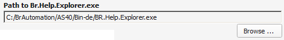

| Value |
Description |
|  |
The path of the "BR.Help.Explorer.exe" from the Automation Studio has to selected via the "Browse ..." button in order to be able to open the hardware modules in the B&R online help. |
|
Sets the time the Systemdump Viewer waits for the B&R online help to be opened. This is neccessary because the .exe needs to set up the different windows before they can be accessed. |
 |
If the urls for searching products or serial numbers should be changed by B&R they could be changed with these options. The current defaults are viewed in the screenshot. |